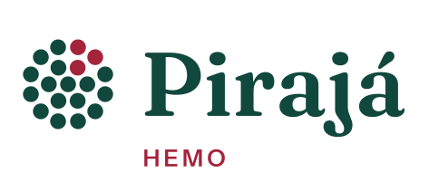
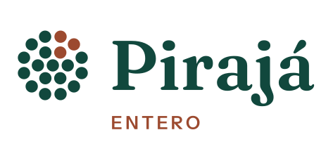
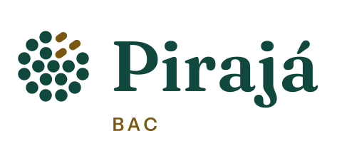
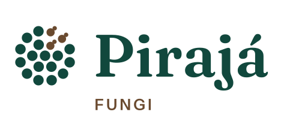

Hemoparasitos
Parasitos do sangue, como plasmódios, tripanossomatídeos e filárias, em gota espessa e esfregaço.
Em breve
Envie a planilha da sua coleta e receba a prevalência com IC 95%, a comparação entre métodos, a análise por faixa etária e território e o relatório pronto em PDF e Excel.
Seus dados ficam com você. A planilha é lida e analisada no seu aparelho — nada é enviado a um servidor.

Helmintos e protozoários no exame parasitológico de fezes e no método de Graham.
Abrir o Entero
Parasitos do sangue, como plasmódios, tripanossomatídeos e filárias, em gota espessa e esfregaço.
Em breve
Bacterioscopia, cultura e identificação bacteriana.
Em breveTestes moleculares, sorológicos e rápidos para vírus.
Em breve
Exame micológico direto e cultura de fungos.
Em breveVigilância de vetores, como mosquitos, flebotomíneos e triatomíneos, e de ectoparasitos, como carrapatos, piolhos e pulgas.
Em breve